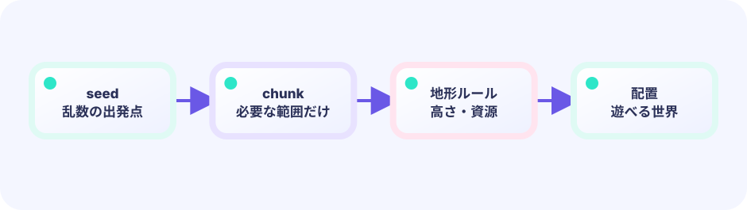

seedと座標を混ぜる
hash(seed, x, y)は、同じ3つの数字なら毎回同じ値を返します。実行する順番に左右されないので、遠い場所も直接作れます。
n := hash(seed, x, y)★★☆☆☆ / PLAYABLE
seedからなめらかな高さ、土と石の層、地下の空洞を作り、同じ数字なら同じ世界を再現します。
はじめて読む人へ
0=草、1=砂、2=水の対応表を先に決めます。同じseedなら同じ教材世界を再現できます。 PLAYABLEは『このページで実際に操作できる』という印です。
このページの1本
説明と次のコードを対応させてから、ゲームで変化を確かめよう。
tile := rng.Intn(3)
PLAYABLE / WEBASSEMBLY
左右ボタンを長押し。PCでは←→またはA/D。38秒以内に3本へ触れればクリア。NEXT SEEDまたはNで別世界、Rで同じ世界を作り直せます。
DEEP DIVE / SEEDED VALUE NOISE
マスごとに完全にばらばらな高さを選ぶと、針のような地面になります。このゲームはseedと座標から同じ乱数を作り、となりの値との間をなめらかにつなぐ値ノイズを使います。高さが決まったら、深さで草・土・石へ分けます。
hash(seed, x, y)は、同じ3つの数字なら毎回同じ値を返します。実行する順番に左右されないので、遠い場所も直接作れます。
n := hash(seed, x, y)8列ごとの乱数を目印にし、その間をsmoothで少しずつ変えます。高さが急に何段も飛びにくくなります。
height := 3 + int(valueNoise(seed, x/8)*6)高さと同じyは草、その下3マスは土、さらに下は石です。地下ノイズが0.70より大きい石だけを空へ戻すと空洞になります。
if y > surface+3 { tile = Stone }TRY IT / HEIGHT FIELD
地形は「列→高さ」です。ノイズでサンプリングし、必要なら削って地層を作ります。seed を固定すれば同じ大地が再現できます。
高さの下を石、上を土、みたいな層分けはあとから載せます。
TRY IT · GO
h = sampleNoise(x, z) h = max(1, h-1)
—
HEIGHT THEN LAYERS
h = noise(x, seed)つぎにfill cells below hいきなり2Dノイズ全部より、高さからが簡単です。
IN THE REAL GAME
一列ずつ表面を求めれば、どのyが空でどこから地面かが決まります。その同じ表面値を地層判定とプレイヤーの足元にも使います。
surfaceY := 3 + int(valueNoise1D(seed, float64(x)/8)*6)
for y := surfaceY; y < worldH; y++ {
switch {
case y == surfaceY: tiles[y][x] = grass
case y <= surfaceY+3: tiles[y][x] = dirt
default: tiles[y][x] = stone
}
}WHY A SEED?
何千マスを渡さなくても、一つの数字から同じ元の世界を共有できます。
WHY LAYERS?
地面の下へ進むほど素材が変わり、探索する理由を作れます。
TRY NEXT
表面がy=4より上なら草を雪へ変え、山だけ白くしてみよう。
FEEDBACK